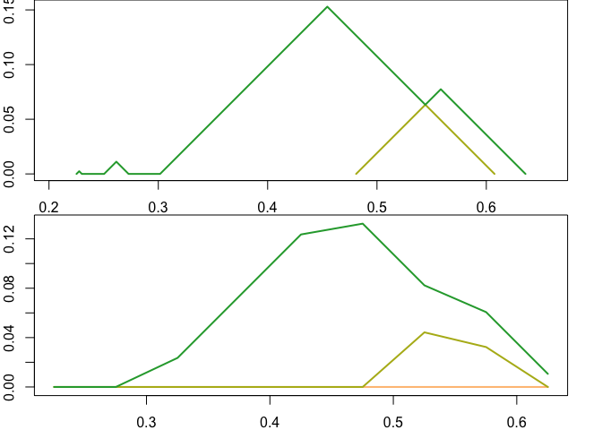

Persistence landscapes are a vectorization of persistence data/diagrams that have useful statistical properties including linearity and an inner product.1 This is an R package interface to a C++ library to efficienctly compute and calculate with persistence landscapes.2
Until the package is on CRAN, use remotes to install the package from the GitHub repository as follows:
install.packages("remotes")
remotes::install_github("corybrunson/plt", build_vignettes = TRUE)Alternatively—and especially if you want to contribute—you can clone or download the code repository and, from within the directory, install the package from source:
devtools::install()You should now be able to load the package normally from an R session:
library(plt)The plt package supports various operations involving persistence landscapes:
Examples and tests in plt rely on other packages to simulate data and to compute persistence diagrams from data:
plt introduces the ‘Rcpp_PersistenceLandscape’ S4 class, which is exposed using Rcpp from the underlying ‘PersistenceLandscape’ C++ class. Instances of this class can be created using new() but the recommended way is to use landscape(). This function accepts either a single matrix of persistence data or a specially formatted list with the class 'persistence_diagram". The $pairs entry of the list is itself a list, of a 2-column matrix of persistence pairs for each homological degree from 0 ($pairs[[1]]) to the maximum degree calculated. The generic converter as_persistence() includes methods for outputs from ripserr::vietoris_rips() and from TDA::*Diag().
To begin an illustration, we noisily sample 60 points from a figure eight and compute the persistence diagram of the point cloud:
set.seed(513611L)
pc <- tdaunif::sample_lemniscate_gerono(60, sd = .1)
pd <- ripserr::vietoris_rips(pc, dim = 1, threshold = 2, p = 2)
#> Warning in vietoris_rips.matrix(pc, dim = 1, threshold = 2, p = 2): `dim`
#> parameter has been deprecated; use `max_dim` instead.
print(pd)
#> PHom object containing persistence data for 63 features.
#>
#> Contains:
#> * 59 0-dim features
#> * 4 1-dim features
#>
#> Radius/diameter: min = 0; max = 0.63582.We the convert the persistence data to the preferred persistence diagram format and inspect some of its features:
pd <- as_persistence(pd)
print(pd)
#> 'persistence' data computed up to degree 1:
#>
#> * 0-degree features: 59
#> * 1-degree features: 4
print(head(pd$pairs[[1]]))
#> [,1] [,2]
#> [1,] 0 0.01918952
#> [2,] 0 0.01947548
#> [3,] 0 0.02604350
#> [4,] 0 0.04218479
#> [5,] 0 0.04542467
#> [6,] 0 0.05941691
print(head(pd$pairs[[2]]))
#> [,1] [,2]
#> [1,] 0.4809292 0.6358225
#> [2,] 0.3016234 0.6075172
#> [3,] 0.2504500 0.2727915
#> [4,] 0.2251884 0.2300871This allows us to compute a persistence landscape—in this case, for the 1-dimensional features. Here we compute the landscape exactly, which can be cost-prohibitive for larger persistence data:
The object pl1 is not an array, but rather an object that encapsulates both the data that encode a landscape and several basic operations that can be performed on it. This allows us to work with persistence landscapes without worrying about pre-processing their representations. At any point, the underlying encoding of the landscape can be extracted using $getInternal(), which in the case of an exactly calculated landscape returns a list of 2-column matrices, each matrix containing coordinates that define one level of the landscape as a piecewise linear function:
print(length(pl1$getInternal()))
#> [1] 2
print(pl1$getInternal())
#> [[1]]
#> [,1] [,2]
#> [1,] -Inf 0.000000000
#> [2,] 0.2251884 0.000000000
#> [3,] 0.2276378 0.002449358
#> [4,] 0.2300871 0.000000000
#> [5,] 0.2504500 0.000000000
#> [6,] 0.2616207 0.011170764
#> [7,] 0.2727915 0.000000000
#> [8,] 0.3016234 0.000000000
#> [9,] 0.4545703 0.152946885
#> [10,] 0.5442232 0.063293964
#> [11,] 0.5583759 0.077446647
#> [12,] 0.6358225 0.000000000
#> [13,] Inf 0.000000000
#>
#> [[2]]
#> [,1] [,2]
#> [1,] -Inf 0.00000000
#> [2,] 0.4809292 0.00000000
#> [3,] 0.5442232 0.06329396
#> [4,] 0.6075172 0.00000000
#> [5,] Inf 0.00000000An alternative, approximate construction computes the value of each level of the landscape at each point on a 1-dimensional grid, ranging from xmin to xmax at increments of by. A landscape constructed using a discrete approximation is stored as a 3-dimensional array of dimensions (levels, values, 2), with one level per feature (some of which may be trivial) and one value per grid point, stored as x, y pairs along the third dimension.
b_ran <- pl_support(pl1)
pl1d <- landscape(pd, degree = 1,
xmin = b_ran[[1L]], xmax = b_ran[[2L]], by = 0.05)
print(dim(pl1d$getInternal()))
#> [1] 4 9 2
print(pl1d$getInternal())
#> , , 1
#>
#> [,1] [,2] [,3] [,4] [,5] [,6] [,7]
#> [1,] 0.2251884 0.2751884 0.3251884 0.3751884 0.4251884 0.4751884 0.5251884
#> [2,] 0.2251884 0.2751884 0.3251884 0.3751884 0.4251884 0.4751884 0.5251884
#> [3,] 0.2251884 0.2751884 0.3251884 0.3751884 0.4251884 0.4751884 0.5251884
#> [4,] 0.2251884 0.2751884 0.3251884 0.3751884 0.4251884 0.4751884 0.5251884
#> [,8] [,9]
#> [1,] 0.5751884 0.6251884
#> [2,] 0.5751884 0.6251884
#> [3,] 0.5751884 0.6251884
#> [4,] 0.5751884 0.6251884
#>
#> , , 2
#>
#> [,1] [,2] [,3] [,4] [,5] [,6] [,7] [,8]
#> [1,] 0 0 0.02356502 0.07356502 0.123565 0.1323288 0.08232875 0.06063412
#> [2,] 0 0 0.00000000 0.00000000 0.000000 0.0000000 0.04425917 0.03232875
#> [3,] 0 0 0.00000000 0.00000000 0.000000 0.0000000 0.00000000 0.00000000
#> [4,] 0 0 0.00000000 0.00000000 0.000000 0.0000000 0.00000000 0.00000000
#> [,9]
#> [1,] 0.01063412
#> [2,] 0.00000000
#> [3,] 0.00000000
#> [4,] 0.00000000Exactly computed landscapes can be converted to discrete landscape objects, but the other direction is not well-defined. Below, we view a portion of the discretized exact landscape, using the default bounds and resolution given to pl1:
# default conversion to discrete uses `by = 0.001`
pl1_ <- pl1$toDiscrete()
print(dim(pl1_$getInternal()))
#> [1] 2 411 2
# print first 12 x-coordinates
pl1_$getInternal()[, seq(230L, 270L), , drop = FALSE]
#> , , 1
#>
#> [,1] [,2] [,3] [,4] [,5] [,6] [,7]
#> [1,] 0.4541884 0.4551884 0.4561884 0.4571884 0.4581884 0.4591884 0.4601884
#> [2,] 0.4541884 0.4551884 0.4561884 0.4571884 0.4581884 0.4591884 0.4601884
#> [,8] [,9] [,10] [,11] [,12] [,13] [,14]
#> [1,] 0.4611884 0.4621884 0.4631884 0.4641884 0.4651884 0.4661884 0.4671884
#> [2,] 0.4611884 0.4621884 0.4631884 0.4641884 0.4651884 0.4661884 0.4671884
#> [,15] [,16] [,17] [,18] [,19] [,20] [,21]
#> [1,] 0.4681884 0.4691884 0.4701884 0.4711884 0.4721884 0.4731884 0.4741884
#> [2,] 0.4681884 0.4691884 0.4701884 0.4711884 0.4721884 0.4731884 0.4741884
#> [,22] [,23] [,24] [,25] [,26] [,27] [,28]
#> [1,] 0.4751884 0.4761884 0.4771884 0.4781884 0.4791884 0.4801884 0.4811884
#> [2,] 0.4751884 0.4761884 0.4771884 0.4781884 0.4791884 0.4801884 0.4811884
#> [,29] [,30] [,31] [,32] [,33] [,34] [,35]
#> [1,] 0.4821884 0.4831884 0.4841884 0.4851884 0.4861884 0.4871884 0.4881884
#> [2,] 0.4821884 0.4831884 0.4841884 0.4851884 0.4861884 0.4871884 0.4881884
#> [,36] [,37] [,38] [,39] [,40] [,41]
#> [1,] 0.4891884 0.4901884 0.4911884 0.4921884 0.4931884 0.4941884
#> [2,] 0.4891884 0.4901884 0.4911884 0.4921884 0.4931884 0.4941884
#>
#> , , 2
#>
#> [,1] [,2] [,3] [,4] [,5] [,6] [,7]
#> [1,] 0.1525661 0.1515746 0.1505831 0.1495915 0.1486 0.1476085 0.1466169
#> [2,] 0.0000000 0.0000000 0.0000000 0.0000000 0.0000 0.0000000 0.0000000
#> [,8] [,9] [,10] [,11] [,12] [,13] [,14]
#> [1,] 0.1456254 0.1446339 0.1436424 0.1426508 0.1416593 0.1406678 0.1396762
#> [2,] 0.0000000 0.0000000 0.0000000 0.0000000 0.0000000 0.0000000 0.0000000
#> [,15] [,16] [,17] [,18] [,19] [,20] [,21]
#> [1,] 0.1386847 0.1376932 0.1367016 0.1357101 0.1347186 0.1337271 0.1327355
#> [2,] 0.0000000 0.0000000 0.0000000 0.0000000 0.0000000 0.0000000 0.0000000
#> [,22] [,23] [,24] [,25] [,26] [,27] [,28]
#> [1,] 0.131744 0.1307525 0.1297609 0.1287694 0.1277779 0.1267864 0.1257948213
#> [2,] 0.000000 0.0000000 0.0000000 0.0000000 0.0000000 0.0000000 0.0009884309
#> [,29] [,30] [,31] [,32] [,33] [,34]
#> [1,] 0.124803292 0.123811762 0.122820233 0.121828703 0.120837174 0.119845644
#> [2,] 0.001976862 0.002965293 0.003953724 0.004942154 0.005930585 0.006919016
#> [,35] [,36] [,37] [,38] [,39] [,40]
#> [1,] 0.118854114 0.117862585 0.116871055 0.11587953 0.11488800 0.1138965
#> [2,] 0.007907447 0.008895878 0.009884309 0.01087274 0.01186117 0.0128496
#> [,41]
#> [1,] 0.11290494
#> [2,] 0.01383803We can also specify the bounds and the resolution of the discretization:
pl1_ <- pl_discretize(pl1, xmin = 0, xmax = 1, by = 0.1)
pl1_$getInternal()
#> , , 1
#>
#> [,1] [,2] [,3] [,4] [,5] [,6] [,7] [,8] [,9] [,10] [,11]
#> [1,] 0 0.1 0.2 0.3 0.4 0.5 0.6 0.7 0.8 0.9 1
#> [2,] 0 0.1 0.2 0.3 0.4 0.5 0.6 0.7 0.8 0.9 1
#>
#> , , 2
#>
#> [,1] [,2] [,3] [,4] [,5] [,6] [,7] [,8] [,9] [,10]
#> [1,] 0 0 0 0.09837659 0.1075172 0.03582254 0.000000000 0 0 0
#> [2,] 0 0 0 0.00000000 0.0000000 0.04388611 0.003068344 0 0 0
#> [,11]
#> [1,] 0
#> [2,] 0plt provides a plot() method for the ‘Rcpp_PersistenceLandscape’ class. It uses grDevices to build color palettes, and as such its default palette is viridis; but the user may supply the name of a recognized palette or a sequence of colors between which to interpolate:
n_levs <- max(pl_num_levels(pl1), pl_num_levels(pl1d))
par(mfrow = c(2L, 1L), mar = c(2, 2, 0, 2))
plot(pl1, palette = "terrain", n_levels = n_levs, asp = 1)
plot(pl1d, palette = "terrain", n_levels = n_levs, asp = 1)
The C++ library is adapted from Paweł Dłotko’s Persistence Landscape Toolbox. It was originally adapted and ported to R in Jose Bouza’s tda-tools package.
Development of this package benefitted from the use of equipment and the support of colleagues at the University of Florida, especially Peter Bubenik’s research group.
Bug reports, unit tests, documentation, use cases, feature suggestions, and other contributions are welcome. See the CONTRIBUTING file for guidance, and please respect the Code of Conduct.
Bubenik P (2015) “Statistical Topological Data Analysis using Persistence Landscapes”. JMLR 16(3):77–102. https://jmlr.csail.mit.edu/papers/v16/bubenik15a.html↩︎
Bubenik P & Dłotko P (2017) “A persistence landscapes toolbox for topological statistics”. Journal of Symbolic Computation 78(1):91–114. https://www.sciencedirect.com/science/article/pii/S0747717116300104↩︎